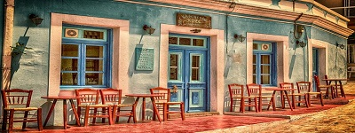

Welcome to The Den! Located in Elmhurst, the little spot is a great place to come in, relax, and grab a bite to eat! We serve classic comfort foods like burgers, sandwiches, accompanied by your choice of sides. Our fries and chips are famous around these parts, and they are homemade for that authentic touch! We have a quiet and cozy environment, and free wi-fi, so you can bring your laptop and work on your things. Every Tuesday, we have an Open Coding Night, and Wednesdays are our D&D Nights!
The Den
